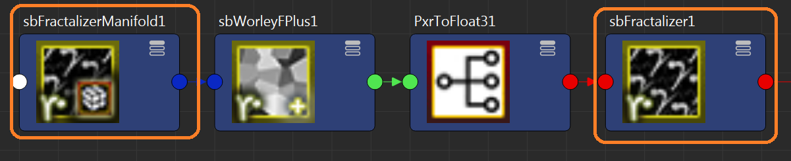

sbFractalizer & sbFractalizerManifold: IMPORTANT: These nodes do not work with RMSDisplacement node. sb*Fractalizer Nodes can be used as alternatives. |
|
VERSION 1.1.1 |
•Cleanup old unrelated code "residue" |
VERSION 1.1 |
•Fixed correct min and max fields for Erosion attribute |
VERSION 1.0 |
•I have created/re-created the Fractalize node. I have based my version on the Slim template of Mitch Prater's Fractalize Slim template from Laika Plausible Shading System Toolkit. To see the effect of the sbFractalizer node, it must be "paired" with the sbFractalizerManifold by connecting it to the manifold of the Base Pattern input node:  Note: I am aware that there is a PxrFractalize node but I couldn't make it work - maybe it's just on my end. It was a good practice nevertheless. |
Ethan's RFM Enhancement Pack is a property of Ethan Phoenix.
All Rights Reserved © Ethan Phoenix. For personal use only. Commercial use is prohibited. Not for redistribution without permission.